PESTAL profundizada · matriz de antecedentes · 6 tendencias
CRITERIO 3.1.5
30 pts
Pertinencia de la propuesta de valor
Propuesta iterada contrastada con problema, mercado y evidencia
01 Punto de partida y ruta
02 Herramientas U3: SQA, storyboard y mock-up
03 Ciclo 1 · uso y estética
04 Iteración v2
05 Ciclo 2 · técnico
06 Validación con usuarios: kit de testeo
07 Propuesta de valor iterada
08 PESTAL, estado del arte y tendencias
09 Pertinencia, sostenibilidad y gestión
10 Anexo: plantillas oficiales
Copiloto Kine · EV3 Prototipado y testeo · INACAP RancaguaRúbrica ES03 · 02
Punto de partida · UA1 y UA2
El problema y la propuesta que llegamos a probar
Desafío (UA1)
¿Cómo podríamos aumentar la visibilidad financiera de kinesiólogas independientes con atención mixta, conectando su agenda con sus ingresos y costos, para reducir a la mitad el tiempo de registro manual (de ~1 h a menos de 30 min diarios) en Rancagua durante 2027?
Propuesta de valor (EV2)
Copiloto Kine es el copiloto financiero de la kinesióloga independiente: se conecta a la agenda que ya usa y convierte cada atención en ganancia real —descontando traslado, materiales, comisión e impuestos— para que sepa cuánto gana, anticipe los meses bajos y deje de cuadrar Excel de noche.
AnticipadorLegible de un vistazoAutomáticoSostenibleRequerimientos R1–R13
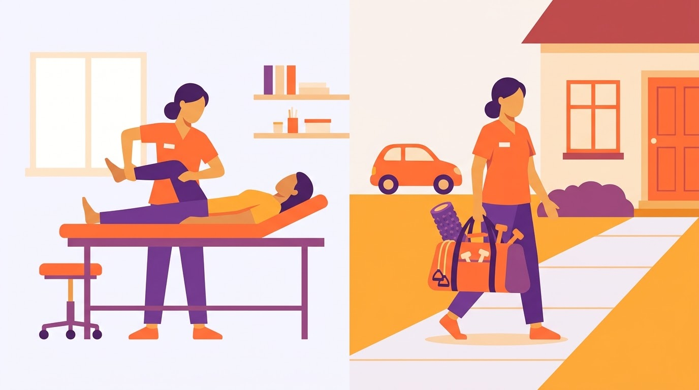
Usuaria
Joselyn Toledo, kinesióloga independiente: Centro Médico InMotion (70/30) + domicilios en Rancagua y Machalí.
Cuadra ingresos en Excel de noche y no sabe cuánto gana de verdad.
Copiloto Kine · EV3 Prototipado y testeo · INACAP RancaguaContexto · 03
Ruta metodológica
Dos ciclos con focos distintos y uno preparado con usuarios
S11 · PrototiparSQA, storyboard y mock-up v1 con la propuesta de valor.
S13–S14 · UsuariosKit de testeo: kinesiólogas, 6 perfiles de pacientes y contadora.
Ciclo 1 · funcional y estético
¿Puede una kinesióloga hacer su día sin ayuda? ¿Se lee, se toca y se entiende? Medido con tareas, auditoría WCAG 2.1 AA, objetivos táctiles, tamaño de letra y heurísticas de Nielsen.
Ciclo 2 · técnico
¿Resuelve con exactitud sus necesidades puntuales? Cálculo por atención, cierre del día, persistencia, costos editables, exportación sin datos clínicos, rendimiento y brechas.
Ciclo con usuarios · preparado
Kit completo con 10 hipótesis y 9 perfiles. Se suma la retroalimentación de la emprendedora (reunión del jueves 12/11) antes de aplicar las sesiones.
Transparencia. Los ciclos 1 y 2 los ejecutó el equipo como usuarios internos (lo permite el toolkit) con scripts reproducibles en unidad-3/ciclo1 y ciclo2. Los resultados con usuarias y pacientes reales se marcan como pendientes: no inventamos respuestas de personas reales.
Copiloto Kine · EV3 Prototipado y testeo · INACAP Rancagua3.1.1 · 3.1.2 · 04
3.1.1.1 · Evaluación diagnóstica
3.1.1.1Tabla SQA
S · Lo que sabemos
Prototipar es materializar la idea para probarla antes de invertir (UA3 de Innovación y Emprendimiento II).
Un storyboard muestra la experiencia en el tiempo; un mock-up la materializa en forma.
Nuestra propuesta de valor, atributos y requerimientos ya están definidos (EV2).
Como estudiantes de Diseño Digital, prototipamos en Figma y en HTML.
Q · Lo que queremos saber
¿Cómo testear una herramienta financiera sin datos reales de la usuaria?
¿Qué indicadores muestran que el prototipo funciona y no solo que “gusta”?
¿Cómo pasar de un testeo funcional a uno técnico en la iteración?
¿Qué tan distinta es la propuesta frente a lo que ya existe en 2026?
A · Lo que aprendimos
Un recorrido de tareas con indicadores medibles (éxito, toques, contraste) da evidencia más sólida que la opinión.
Testear al interior del equipo es válido para depurar; la validación final necesita a la usuaria.
Cada ciclo debe tener un foco distinto: primero uso y estética; luego exactitud, privacidad y brechas técnicas.
La ruta del día, que no estaba en el foco original, aporta tanto valor como el tablero financiero.
Copiloto Kine · EV3 Prototipado y testeo · INACAP Rancagua3.1.1 · 05
3.1.2.1 · Storyboard con propuesta de valor
3.1.2.1Un día de Joselyn con Copiloto Kine
Escena 1
11:40 p. m. · el Excel de siempre
Joselyn termina de atender y cuadra ingresos y gastos en Excel. No sabe si el mes va bien.
ProductoSituación actual: registro manual, sin proyección (I1, I3).
Propuesta de valorNecesidad que la propuesta debe resolver: saber cuánto gana sin trabajo nocturno.
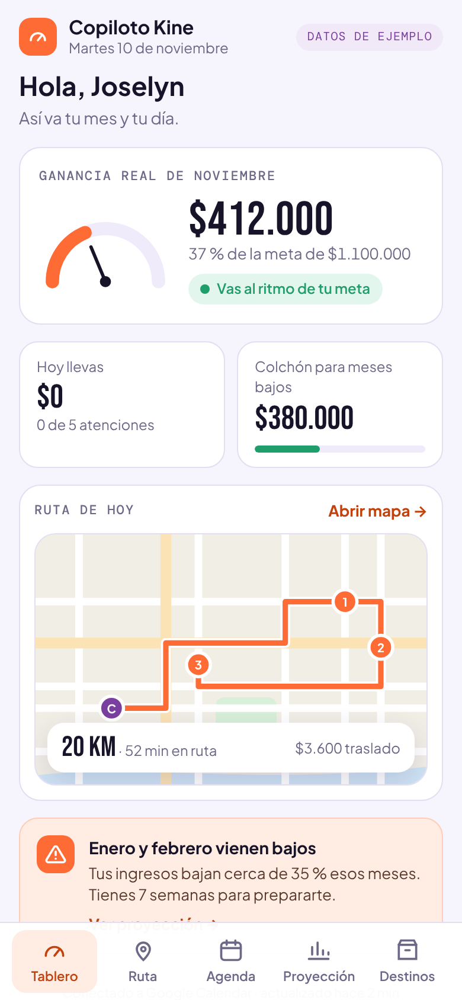
Escena 2
8:00 a. m. · abre el tablero
Ve su ganancia real del mes, el % de la meta y un semáforo; abajo, la ruta del día.
ProductoTablero con ganancia real y semáforo de meta.
Propuesta de valorAtributo “Legible de un vistazo”.
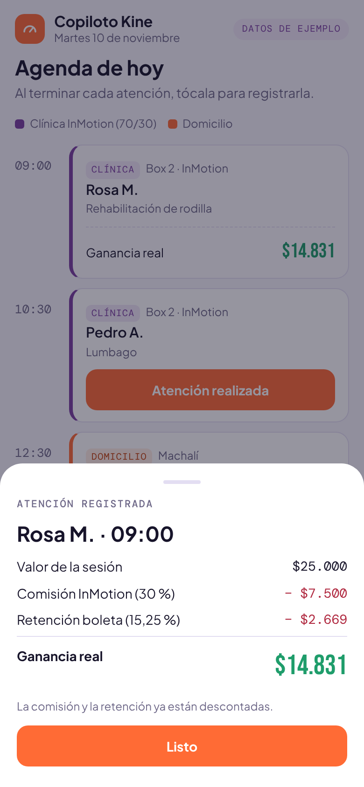
Escena 3
9:45 · termina en la clínica
Toca “Atención realizada” y la app muestra cuánto le quedó tras comisión y retención.
ProductoRegistro de un toque con desglose de la ganancia.
Propuesta de valorAtributo “Automático”: la cita se vuelve ingreso sin digitar.
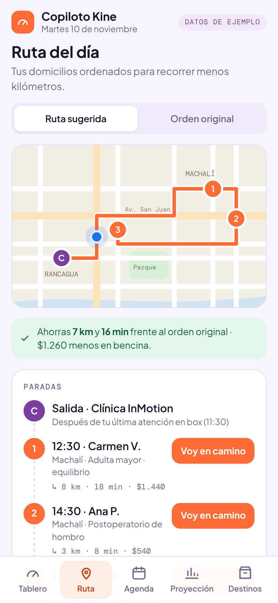
Escena 4
11:30 · sale a domicilios
La ruta agrupa Machalí y el centro y le muestra kilómetros, minutos y costo de bencina.
ProductoRuta del día con paradas y ahorro de km.
Propuesta de valorAtributo “Sostenible”: menos km, menos costo y emisiones.
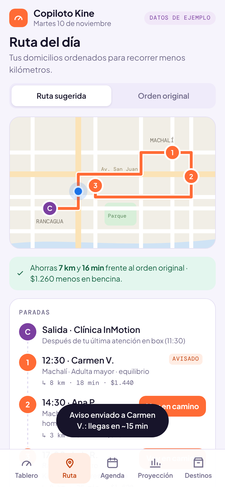
Escena 5
12:10 · “voy en camino”
Con un toque avisa a Carmen que va llegando, sin escribir mientras maneja.
ProductoAviso automático al paciente.
Propuesta de valorTrato 1:1 que Joselyn define como su diferenciador.
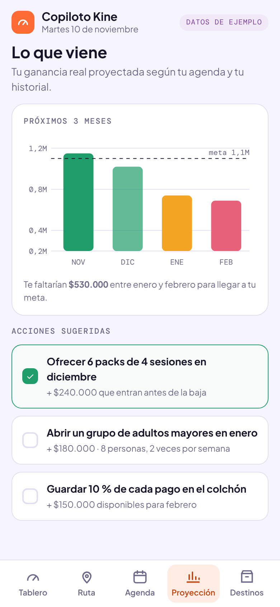
Escena 6
Domingo · mira lo que viene
Ve que enero y febrero vienen bajos y agrega acciones (packs, colchón) a su plan.
ProductoProyección a 3 meses con acciones sugeridas.
Propuesta de valorAtributo “Anticipador”: avisa antes de la curva.
Copiloto Kine · EV3 Prototipado y testeo · INACAP Rancagua3.1.1 · 3.1.5 · 06
3.1.2.2 · Mock-up con propuesta de valor
3.1.2.2Prototipo v1 navegable en el celular
TableroGanancia real del mes, meta, semáforo, colchón, ruta en miniatura y alerta de meses bajos. Legible de un vistazo · AnticipadorRutaMapa con paradas numeradas, km, minutos, costo y botón “Voy en camino”. Sostenible · Cercano
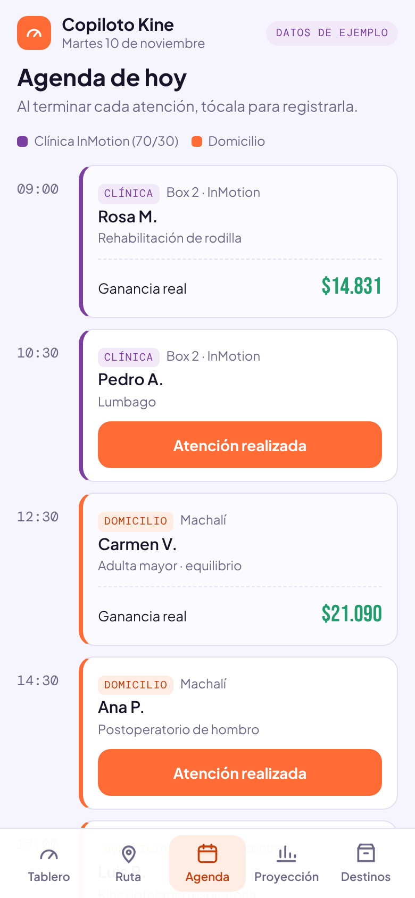
AgendaCitas de clínica y domicilio; un toque registra la atención. AutomáticoGananciaDesglose: valor, comisión, traslado, materiales y retención. Legible · AutomáticoProyecciónGanancia proyectada a 3 meses y acciones que cierran la brecha. Anticipador
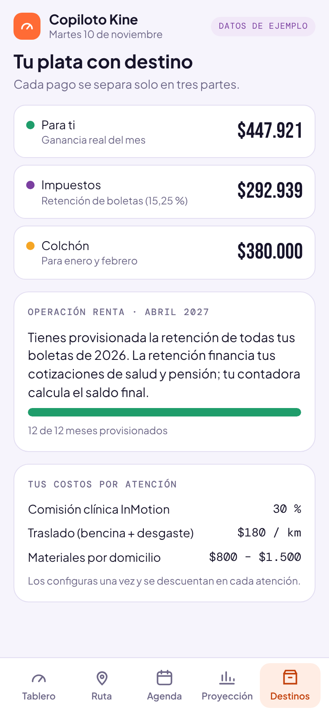
DestinosSeparación en ganancia, impuestos y colchón; costos configurados. Sostenible
HTML autocontenido (390 px), sin instalación: se abre desde un enlace en el celular. Paleta clara del proyecto con acentos naranjos; clínica en morado y domicilio en naranjo.
Copiloto Kine · EV3 Prototipado y testeo · INACAP Rancagua3.1.2 · 07
3.1.2.3 · Ficha de planificación del testeo
3.1.2.3Ciclo 1 · funcional y estético
Evaluar si el prototipo v1 permite a una kinesióloga independiente completar sus tareas diarias de registro, ruta y control financiero sin ayuda, y si su estética es clara, accesible y coherente con la metáfora.
Objetivo específico
Participantes
Actividad
Roles
Indicador
Pregunta
Procesamiento
Lugar · tiempo
Verificar que las tareas principales se completan sin ayuda
Equipo en rol de usuaria (perfil de Joselyn, UA2)
Recorrido guiado de 11 tareas
Mod.: Claudia · Ejec.: Néstor · Reg.: Francisco
≥ 90 % de tareas completadas; ≤ 3 toques por tarea
¿Se pudo completar sin ayuda? ¿Cuántos toques?
Planilla de tareas (éxito y toques) automatizada
Sala INACAP · 30 min
Evaluar legibilidad y accesibilidad
Auditoría del equipo
Auditoría WCAG 2.1 AA (axe-core) y medición de botones y letra
Revisar coherencia estética y de uso con la metáfora
3 integrantes
Revisión heurística (10 heurísticas de Nielsen)
Todo el equipo
Sin problemas de severidad ≥ 3
¿Transmite “tablero y copiloto” sin recargar?
Severidad 0–4 y matriz CDM
Sala INACAP · 20 min
Moderación: Claudia Cifuentes · Ejecución de tareas: Néstor Rivera · Registro: Francisco Ahumada · Consolidación y auditoría técnica: Benjamín Vera Yáñez
Copiloto Kine · EV3 Prototipado y testeo · INACAP Rancagua3.1.2 · 08
Ciclo 1 · resultados
Funciona en lo central; falla en corregir y en accesibilidad
7/11
tareas completadas sin ayuda (meta ≥ 90 %)
11
errores de contraste WCAG AA (blanco sobre naranjo 2,84:1)
7
botones o enlaces bajo 44 px (enlaces de 19 px)
10–11 px
textos en etiquetas, leyendas y navegación
#
Tarea
Éxito
Toques
Evidencia
T1
Saber cuánto ganó en el mes y si va bien
✔
0
Visible sin tocar nada: $412.000 · Vas al ritmo de tu meta
T2
Registrar una atención como realizada
✔
2
Hoja de ganancia visible: sí
T3
Entender de qué se compone la ganancia de una atención
✔
2
Valor de la sesión $28.000 · Traslado (8 km) − $1.440 · Materiales − $1.200 · Retención boleta …
T4
Corregir una atención marcada por error
✖
—
No existe opción para deshacer o editar la atención
T5
Ver la ruta del día y avisar al primer paciente
✔
2
Feedback: Aviso enviado a Carmen V.: llegas en ~15 min
T6
Comparar la ruta sugerida con el orden original
✔
2
Ahorro visible en orden original: no
T7
Saber cuánto falta para cubrir enero y febrero y agregar una acción
✔
2
Te faltarían $770.000 entre enero y febrero para llegar a tu meta. → Te faltarían $530.000 entr…
T8
Saber cuánto tiene separado para impuestos
✔
1
Impuestos: $286.000
T9
Cambiar el costo por km o la comisión de la clínica
✖
—
Los costos se muestran pero no se pueden editar
T10
Marcar que un paciente no asistió
✖
—
No existe estado de inasistencia o cancelación
T11
Preparar la información del mes para la contadora
✖
—
No existe exportación para la contadora
Copiloto Kine · EV3 Prototipado y testeo · INACAP Rancagua3.1.2 · 09
Ciclo 1 · revisión heurística
Tres problemas mayores, todos de control del usuario
Heurística
Hallazgo
Severidad 0–4
H1 Visibilidad del estado
Hoja de confirmación y avisos después de cada acción.
0
H2 Relación con el mundo real
“Destinos” no se entiende; “ganancia real” no está definida.
2
H3 Control y libertad
No se puede deshacer una atención marcada por error.
3
H4 Consistencia
Dos naranjas distintos en botones y enlaces.
1
H5 Prevención de errores
Sin opción “no asistió”: una inasistencia sumaría un ingreso falso.
3
H6 Reconocer antes que recordar
El desglose muestra todos los descuentos al registrar.
0
H7 Flexibilidad
Los costos (km, comisión, retención) no se pueden ajustar.
3
H8 Estética minimalista
Tablero equilibrado; la tarjeta del mapa en miniatura tapaba parte del recorrido.
1
H9 Recuperarse de errores
Sin camino para corregir una cifra mal registrada.
2
H10 Ayuda
La proyección no explica de dónde salen los números.
1
Lectura
Severidad 3 en H3, H5 y H7: no se puede deshacer, no existe “no asistió” y los costos no se ajustan. La promesa “automático” se rompe ante el primer error.
Severidad 2 en H2 y H9: “Destinos” y “ganancia real” no se entienden sin explicación.
Lo estético funciona: tablero compacto, paleta clara y jerarquía legible (H8 = 1).
Regla de decisión
Todo problema de severidad ≥ 2 entra a la iteración v2.
Copiloto Kine · EV3 Prototipado y testeo · INACAP Rancagua3.1.2 · 10
3.1.2.4 · Matriz CDM con propuesta de valor
3.1.2.4Ciclo 1 · prototipo v1
Cualidades
Debilidades
Mejoras
PRODUCTO / SERVICIO
T1 sin tocar nada: la ganancia del mes es visible al abrir.
Registrar una atención: 2 toques con confirmación.
Desglose completo de la ganancia por atención.
Ruta y aviso al paciente con respuesta inmediata.
Proyección que reacciona al agregar acciones.
4 de 11 tareas no se pueden completar: deshacer, inasistencia, editar costos y exportar.
11 textos con contraste insuficiente (blanco sobre naranja: 2,84:1).
7 botones o enlaces bajo 44 px (enlaces de 19 px).
Textos de 10 y 11 px en etiquetas, leyendas y navegación.
En “orden original” desaparece el dato de ahorro.
Agregar “Deshacer” y “No asistió”.
Costos editables y exportación para la contadora.
Naranja accesible #C2410C (5,2:1) para botones.
Botones de 44 px y letra mínima de 12 px.
Mostrar la diferencia de km en ambos modos y valores en el gráfico.
PROPUESTA DE VALOR
“Legible de un vistazo”: meta en % y semáforo sin leer números.
“Automático”: la cita se convierte en ingreso sin digitar.
“Anticipador”: la alerta de enero y febrero aparece en el inicio.
“Automático” se rompe ante un error: no hay forma de corregir.
“Ganancia real”, el centro de la propuesta, no se explica.
“Cercano”: el aviso no muestra qué se le envía al paciente.
Definir “ganancia real” bajo el indicador.
Mostrar el texto del mensaje “voy en camino”.
Llevar la ruta al centro de la metáfora: es lo más “copiloto” de la app.
Copiloto Kine · EV3 Prototipado y testeo · INACAP Rancagua3.1.2 · 11
De la prueba a la iteración
7 DE 11 → 11 DE 11
Tareas completadas sin ayuda, de la versión 1 a la versión 2. Los errores de contraste bajaron de 11 a 0, los botones chicos de 7 a 0 y la letra mínima subió a 12 px.
Copiloto Kine · EV3 Prototipado y testeo · INACAP Rancagua3.1.3 · 12
3.1.3.1 · Panel de metáforas y atributos iterado
3.1.3.1La metáfora pasa del tablero al copiloto
Antes (EV2)
“Copiloto Kine es como el tablero y el copiloto de un auto de rally.”
Después (iteración)
“Copiloto Kine es como el copiloto de un rally: lee la ruta, canta los tiempos y lleva las cuentas mientras ella maneja.”
Por qué: En el ciclo 1 la ruta del día fue la vista con más valor percibido y la que mejor encarna la idea de “copiloto”, mientras el tablero funcionó mejor en tamaño reducido. La metáfora deja de centrarse en el instrumento (el tablero) y pasa a centrarse en el acompañante que lee la ruta y lleva la libreta.
Anticipador
…en el sentido de que canta la curva antes de llegar: alerta enero y febrero con 7 semanas y propone acciones con su monto.
Se mantiene. Ciclo 1: la alerta se entiende; faltaban valores en el gráfico.
Ec
Claro
…en el sentido de que se lee al sol y de un vistazo: letra mínima de 12 px, contraste AA y “ganancia real” explicada en una línea.
Reemplaza “Legible de un vistazo” e incorpora la accesibilidad medida.
So
Automático y corregible
…en el sentido de que la cita se vuelve ingreso con un toque y, si hubo un error o una inasistencia, se corrige con otro.
Se amplía. Ciclo 1: “automático” sin corrección generaba registros falsos.
SoEc
Sostenible
…en el sentido de que rinde más con menos: 7 km menos por día, colchón para los meses bajos y datos de salud fuera del sistema.
Se refuerza con la ruta y la privacidad por diseño.
EcSoAm
Copiloto Kine · EV3 Prototipado y testeo · INACAP Rancagua3.1.3 · 13
3.1.3.2 · Storyboard iterado
3.1.3.2El mismo día, con lo que aprendimos del ciclo 1
Escena 1
11:40 p. m. · el Excel de siempre
La escena de partida se mantiene: es la situación que el sistema reemplaza.
CualidadSe entiende el problema sin explicación.
Mejora incorporadaMostrar el tiempo perdido: ~1 h diaria (Catalina, UA1).
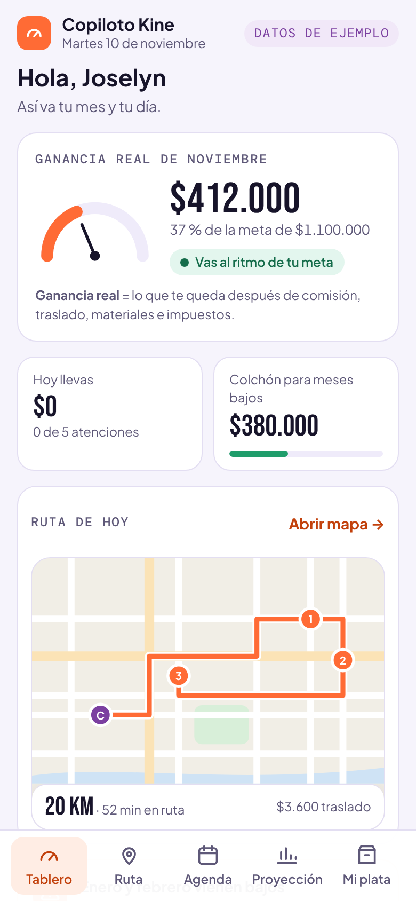
Escena 2
8:00 a. m. · abre el tablero
Tablero compacto con la definición de “ganancia real” y la ruta en miniatura.
CualidadRespuesta a T1 sin tocar nada.
Mejora incorporadaSe agregó la definición; letra mínima de 12 px.
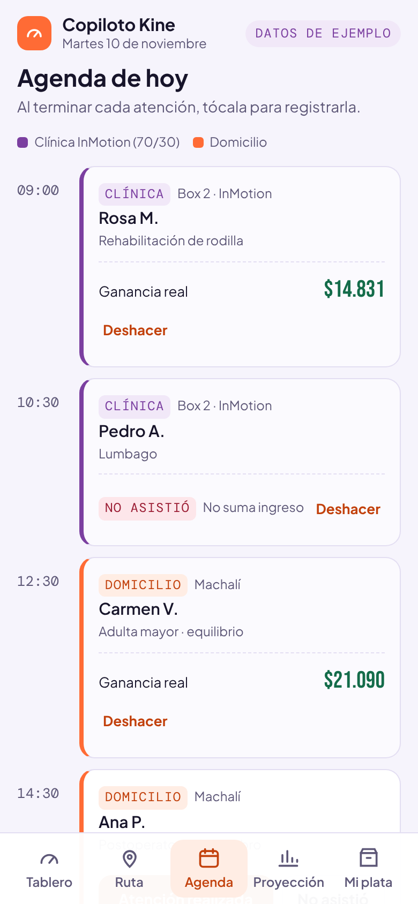
Escena 3
9:45 · registra o corrige
Puede marcar “Atención realizada”, “No asistió” o deshacer.
CualidadEl registro sigue siendo de un toque.
Mejora incorporadaSe agregaron deshacer e inasistencia (T4, T10).
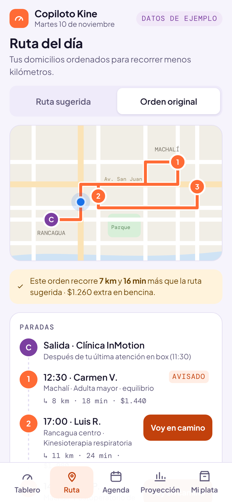
Escena 4
11:30 · ruta del día
Compara la ruta sugerida con su orden habitual y ve los km y la bencina de diferencia.
CualidadLa ruta es la vista más valorada.
Mejora incorporadaLa diferencia se muestra en ambos modos (T6).
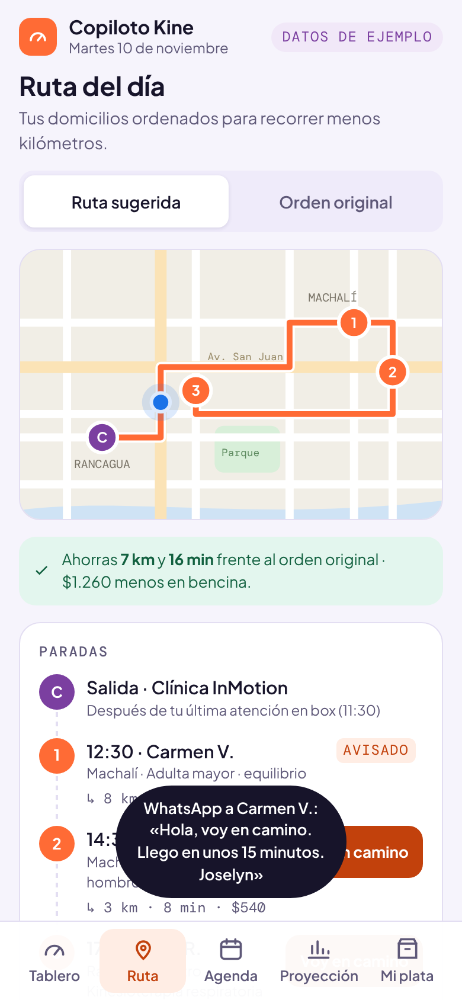
Escena 5
12:10 · “voy en camino”
El aviso muestra el mensaje exacto que recibe el paciente.
CualidadMantiene el trato cercano.
Mejora incorporadaTexto del mensaje visible antes de enviar.
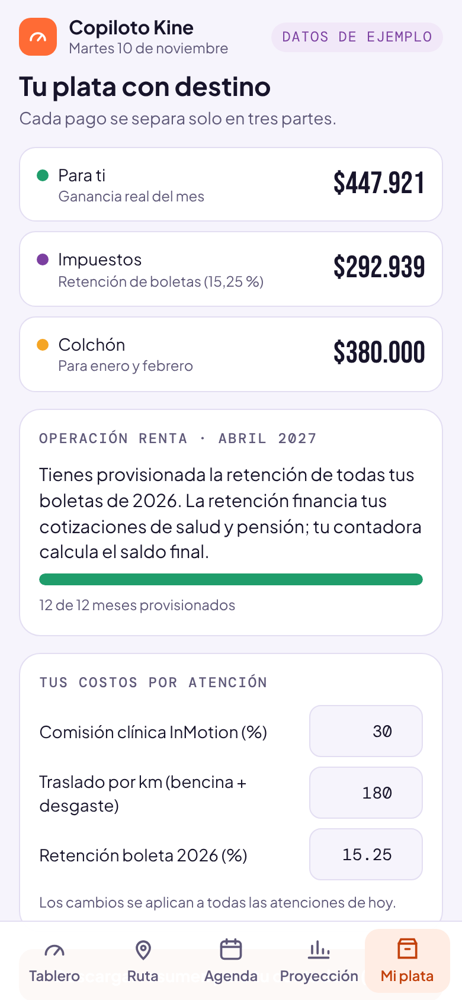
Escena 6
Fin de mes · “Mi plata”
Ajusta sus costos y descarga el resumen para la contadora, sin datos clínicos.
CualidadSepara ganancia, impuestos y colchón.
Mejora incorporadaCostos editables y exportación (T9, T11).
Copiloto Kine · EV3 Prototipado y testeo · INACAP Rancagua3.1.3 · 14
3.1.3.3 · Mock-up iterado
3.1.3.3Versión 1 → versión 2
→
Tablero “Ganancia real” definida; letra ≥ 12 px
→
Agenda Deshacer y “No asistió”; botones accesibles
→
“Destinos” → “Mi plata” Costos editables y exportación
Copiloto Kine · EV3 Prototipado y testeo · INACAP Rancagua3.1.3 · 15
3.1.3.3 · Ajustes fundamentados
3.1.3.3Cada cambio responde a un hallazgo medido
#
Cambio en v2
Hallazgo del ciclo 1
Requerimiento / atributo
1
Deshacer una atención
T4 fallida · H3 severidad 3
R6 · R7
2
Estado “No asistió” sin ingreso
T10 fallida · H5 severidad 3
R1
3
Costos editables (comisión, km, retención)
T9 fallida · H7 severidad 3
R3 · R8 · R12
4
Exportación CSV para la contadora, sin datos clínicos
T11 fallida
R12 · R13
5
Naranja accesible en botones (#C2410C) y verde oscuro en estados
11 errores de contraste
R5
6
Botones y enlaces de 44 px o más
7 objetivos táctiles chicos
R5
7
Letra mínima de 12 px
Textos de 10–11 px
R5
8
Definición de “ganancia real” en el tablero
H2 severidad 2
R5
9
Diferencia de km visible en ambos modos de ruta
T6: ahorro oculto
R9
10
Valores en las barras de la proyección
H10 severidad 1
R10
11
Texto del mensaje “voy en camino” visible
Debilidad de propuesta de valor
Cercano
12
“Destinos” pasa a llamarse “Mi plata”
H2 severidad 2
R5
Copiloto Kine · EV3 Prototipado y testeo · INACAP Rancagua3.1.3 · 16
3.1.3.4 · Ficha de planificación del testeo de la iteración
3.1.3.4Ciclo 2 · técnico: ¿resuelve sus necesidades puntuales?
Verificar técnicamente que el prototipo v2 resuelve con exactitud y confiabilidad las necesidades puntuales de la kinesióloga independiente (ganancia por atención, costos, impuestos, cierre del día, privacidad y uso en terreno) e identificar las brechas técnicas para la implementación.
Objetivo específico
Participantes
Actividad
Roles
Indicador
Pregunta
Procesamiento
Lugar · tiempo
Exactitud de los cálculos
Equipo técnico
Pruebas automáticas contra una hoja de cálculo de referencia (P1, P2, P5, P11)
Benjamín · Néstor
Diferencia ≤ $1 en todos los casos
¿La ganancia mostrada es la correcta?
Script de pruebas con resultado por caso
Remoto · 20 min
Cierre del día y continuidad de los datos
Equipo técnico
Simular un día de 5 atenciones, inasistencia y recarga (P3, P4, P7)
Néstor
≤ 12 toques; 0 datos perdidos
¿Cerrar el día toma segundos y no pierde nada?
Conteo de toques y comparación antes/después
Remoto · 15 min
Privacidad y entrega a la contadora
Equipo + asesor financiero (revisión pendiente)
Descargar el resumen y revisar su contenido (P6)
Francisco
0 diagnósticos y 0 nombres completos
¿La contadora recibe lo que necesita y nada más?
Revisión del archivo exportado
Remoto · 10 min
Uso en terreno
Equipo técnico
Medir peso, carga, ruta y fuentes sin conexión (P8, P9, P10)
Benjamín
< 100 KB; carga < 1,5 s; legible sin fuentes web
¿Funciona entre domicilios con datos móviles?
Métricas del navegador
Remoto · 10 min
Cobertura de requerimientos
Todo el equipo
Trazar R1–R13 contra pruebas y tareas
Claudia
≥ 75 % cumplidos
¿Qué necesidad queda sin resolver?
Matriz de trazabilidad
Sala INACAP · 20 min
Copiloto Kine · EV3 Prototipado y testeo · INACAP Rancagua3.1.2 · 3.1.3 · 17
Ciclo 2 · resultados
Exacto, rápido y sin datos clínicos
11/11
pruebas técnicas aprobadas
$0
diferencia con la hoja de referencia en 5 atenciones
11
toques para cerrar un día de 5 atenciones (antes ~60 min en Excel)
39 KB
peso total; legible sin fuentes web
#
Req.
Prueba
OK
Evidencia
P1
R4 · R8 · R12
Ganancia neta por atención coincide con el cálculo de referencia (5 casos)
Funciona con la agenda de ejemplo; falta leer la agenda real.
R2
Integrarse con la agenda que ya usa
Simulado
—
Se muestra “Conectado a Google Calendar”; la conexión real es brecha B1.
R3
Distinguir clínica (70/30) de domicilio
Cumple
P1 · P5
Comisión editable.
R4
Ganancia neta por atención, semana y mes
Parcial
P1 · P2
Atención, día y mes; la vista semanal no existe.
R5
Lenguaje no contable y lectura de menos de 1 minuto
Cumple
T1 · axe
Lectura sin tocar nada; 0 errores WCAG AA.
R6
Cerrar el día en menos de 30 minutos
Cumple
P4
11 toques para 5 atenciones.
R7
Registrar en el momento de la atención
Cumple
T2 · P3
2 toques; persiste al reabrir.
R8
Descontar traslado y materiales por atención
Cumple
P1 · P5
Costo por km editable.
R9
Agrupar domicilios por sector
Cumple*
P8
*Mapa ilustrativo; la optimización real es brecha B4.
R10
Historial y proyección de 3 a 6 meses
Parcial
T7
Proyección de ejemplo, no calculada desde historial (B3).
R11
Alertar meses bajos y sugerir acciones
Cumple
T7
Acciones con monto que cierran la brecha.
R12
Provisionar retención y estimar Operación Renta
Cumple
P11 · P6
Tasa editable (16 % en 2027); la estimación final queda con la contadora.
R13
Solo datos financieros, nunca ficha clínica
Parcial
P6
La exportación cumple, pero la agenda muestra el motivo de consulta (B6).
Copiloto Kine · EV3 Prototipado y testeo · INACAP Rancagua3.1.2 · 3.1.5 · 19
Ciclo 2 · brechas técnicas
Lo que el prototipo todavía no resuelve
#
Brecha
Qué hacer
Cuándo
B1
Integración real con la agenda
Leer citas de Google Calendar o Cal.com con permiso de la usuaria.
MVP (UA4)
B2
Datos solo en el celular
Hoy se guardan en el navegador: si cambia de teléfono, pierde el historial. Respaldo cifrado en la nube.
MVP (UA4)
B3
Proyección de ejemplo
Calcularla con el historial propio (promedio por mes del año anterior) desde el tercer mes de uso.
Fase 2
B4
Mapa ilustrativo
Usar un servicio de mapas para ordenar paradas reales y estimar tiempos.
Fase 2
B5
Aviso simulado
Abrir WhatsApp con el mensaje ya escrito (enlace wa.me) sin costo de API.
MVP (UA4)
B6
Motivo de consulta visible
Es un dato de salud: ocultarlo por defecto y dejarlo solo en la agenda original.
Inmediato
B7
Sin costos fijos del mes
La ganancia mensual no descuenta celular, seguros ni capacitaciones; agregar costos fijos.
MVP (UA4)
Las brechas no son fallas del prototipo sino el backlog del MVP (UA4): integraciones reales, respaldo en la nube y privacidad reforzada. B6 se resuelve antes de usar datos reales.
Copiloto Kine · EV3 Prototipado y testeo · INACAP Rancagua3.1.3 · 20
3.1.2.4 · Matriz CDM con propuesta de valor
3.1.2.4Ciclo 2 · prototipo v2
Cualidades
Debilidades
Mejoras
PRODUCTO / SERVICIO
11 de 11 pruebas técnicas aprobadas.
Cálculo exacto: diferencia de $0 frente a la referencia en los 5 casos.
Cierre de un día de 5 atenciones en 11 toques, sin digitar.
Registros persisten al cerrar y reabrir.
39,3 KB y carga en 24 ms (archivo local); legible sin fuentes web.
La agenda es de ejemplo: no hay integración real (B1).
Los datos viven solo en el celular (B2).
La proyección no sale del historial (B3).
La agenda muestra el motivo de consulta, un dato de salud (B6).
Ocultar el motivo de consulta (inmediato).
Integración con Google Calendar y respaldo en la nube para el MVP.
Enlace wa.me para el aviso real.
Costos fijos mensuales.
PROPUESTA DE VALOR
“Automático y corregible” queda verificado (P3, P4, P7).
Retención configurable: resiste el alza de la Ley 21.133 (P11).
Privacidad por diseño en la exportación (P6).
“Anticipador” no es creíble sin historial real.
“Se conecta a la agenda que ya usa” todavía no es cierto en el prototipo.
La ganancia del mes omite costos fijos: puede sobrestimar.
Ajustar la redacción de la propuesta a lo que el MVP cumple.
Prometer la proyección “desde tu tercer mes de uso”.
Validar las reglas tributarias con el asesor financiero.
Copiloto Kine · EV3 Prototipado y testeo · INACAP Rancagua3.1.3 · 21
Validación con usuarios · kit de testeo
Preparado para kinesiólogas, pacientes y contadora
#
Público
Hipótesis
Éxito si…
H1
Kinesióloga
Cierra el día en menos de 30 minutos (meta del desafío).
≤ 5 min sin digitar
H2
Kinesióloga
Entiende “ganancia real” sin explicación.
2 de 2 kinesiólogas
H3
Kinesióloga · contadora
Confía en el cálculo de comisión, traslado y retención.
≥ 4 y sin errores
H4
Kinesióloga
Pagaría una suscripción mensual por la herramienta.
Rango que incluya ≤ $25.000
H5
Pacientes a domicilio
Aceptan una ventana de llegada de 30 min para que la kine ordene su ruta.
≥ 70 % confirma la ventana
H6
Pacientes
El aviso “voy en camino” se entiende y da tranquilidad.
≥ 80 % entiende · ≥ 4
H7
Pacientes
El comprobante sin diagnóstico les sirve (incluido reembolso).
≥ 80 % lo considera suficiente
H8
Adulto mayor
Lee y responde el recordatorio solo o con letra grande.
≥ 2 de 3 participantes
H9
Contadora
El resumen exportado alcanza para la declaración mensual y anual.
Sin campos faltantes críticos
H10
Pacientes
Una hora liberada a precio preferente les interesa y no se siente invasiva.
≥ 50 % la tomaría · 0 la percibe como spam
Qué incluye el kit (19 págs.)
Plan, hipótesis, muestra y calendario
9 perfiles de participantes
Guiones A (kines), B (pacientes) y C (contadora)
Consentimiento informado (Ley 21.719)
Pautas de observación, SUS y encuesta de pacientes
Matriz de consolidación con reglas de decisión
Invitaciones listas para WhatsApp
Estado
Resultados Pendientes de sesión. Entrada previa: retroalimentación de la emprendedora en la reunión del jueves 12/11 (grabación del profesor).
Copiloto Kine · EV3 Prototipado y testeo · INACAP Rancagua3.1.2 · 3.1.5 · 22
Validación con usuarios · públicos
Nueve perfiles: quien usa la app y quien vive sus efectos
K1
Joselyn Toledo Kinesióloga independiente · usuaria del caso
Atención mixta: Centro Médico InMotion (70/30) y domicilios en Rancagua y Machalí. Hoy cuadra ingresos en Excel de noche.
H1 · H2 · H3 · H4 · Presencial con su celular · 60 min
K2
Catalina Kinesióloga · experta par (UA1)
Colega independiente entrevistada en la UA1: “organizar el Excel me toma una hora diaria”.
Lleva la contabilidad de profesionales a honorarios (boletas, retención, Operación Renta).
H3 · H9 · Remota · 20 min
P1
“Don Hernán” Adulto mayor atendido a domicilio
70 años o más. Rehabilitación tras una caída o por artrosis. Vive en Machalí con su familia. Usa WhatsApp, con letra grande.
H5 · H6 · H8 · Presencial, idealmente en su casa · 15 min
P2
“Marcela” Cuidadora familiar
40 a 60 años. Coordina las sesiones de su madre o padre mientras trabaja. Paga por transferencia y guarda las boletas.
H5 · H6 · H7 · Presencial o remota · 15 min
P3
“Camila” Estudiante con dolor de espalda
18 a 25 años. Dolor lumbar o cervical por postura y horas de notebook. Presupuesto ajustado. Agenda todo desde el celular.
H5 · H7 · H10 · Presencial en INACAP · 15 min
P4
“Rodrigo” Trabajador de oficina o teletrabajo
30 a 45 años. Cervicalgia o tendinitis por trabajo en computador. Agenda rígida; pide reembolso a su Isapre o seguro.
H5 · H7 · Remota o presencial · 15 min
P5
“Luis” Trabajador por turnos (minería o industria)
35 a 55 años. Lumbalgia no laboral. Sistema de turnos 7×7: solo puede atenderse en sus días libres.
H5 · H10 · Presencial o remota · 15 min
P6
“Valentina” Deportista amateur
20 a 35 años. Esguince o tendinopatía por running o fútbol. Quiere volver rápido a entrenar; flexible en horario.
H6 · H10 · Presencial · 15 min
K1 y K2 son participantes reales del proyecto (UA1). Los pacientes entre comillas son perfiles a reclutar: se invita a pacientes de Joselyn solo si ella lo propone, o a personas del entorno del equipo que calcen con el perfil. No se registran diagnósticos.
Copiloto Kine · EV3 Prototipado y testeo · INACAP Rancagua3.1.2 · 23
Nuevo estímulo · vista paciente
Lo que recibe el paciente cuando su kine usa Copiloto Kine
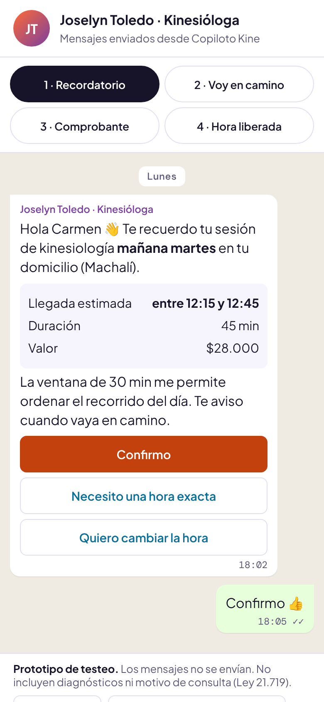
M1 · RecordatorioVentana de 30 min (H5)
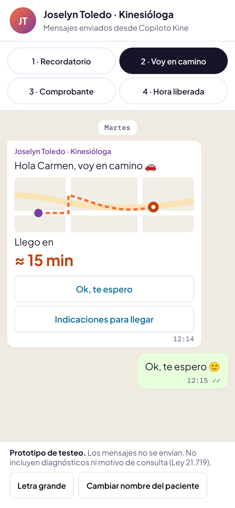
M2 · Voy en caminoTranquilidad (H6)
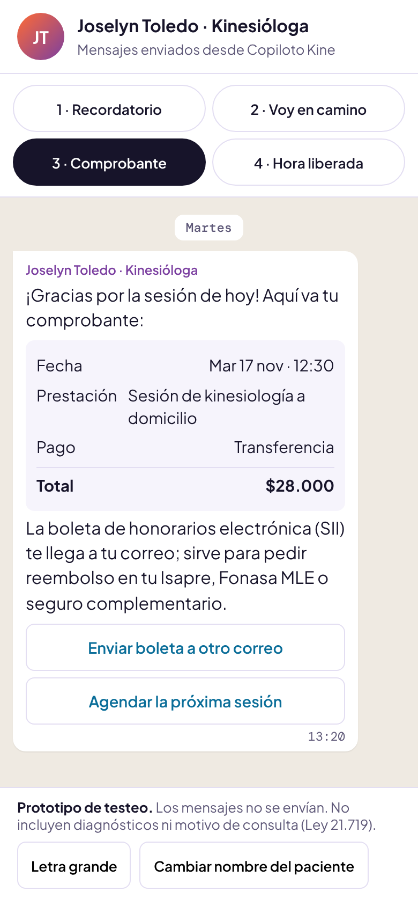
M3 · ComprobanteSin diagnóstico (H7)
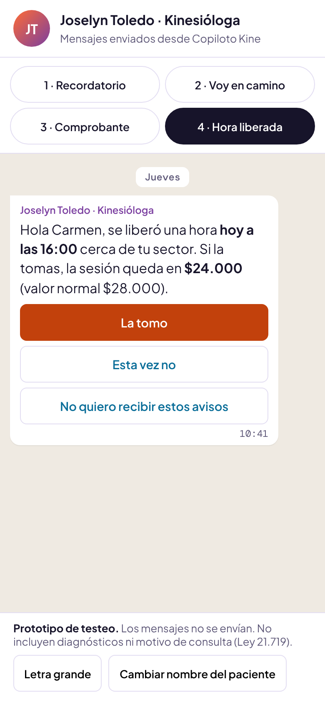
M4 · Hora liberadaPrecio preferente (H10)
Por qué
La ruta sugerida (−7 km/día) solo funciona si el paciente acepta una
ventana de llegada. Es la hipótesis más riesgosa del modelo y no se puede probar con kinesiólogas.
Accesibilidad
Botón “Letra grande” para adultos mayores, botones de 44 px y 0 errores WCAG AA en los 4 mensajes.
Archivo
prototipo/vista-paciente.html
Copiloto Kine · EV3 Prototipado y testeo · INACAP Rancagua3.1.2 · 24
Propuesta de valor iterada · 3.1.5
DE COPILOTO FINANCIERO A COPILOTO DE SU DÍA.
Copiloto Kine es el copiloto de la kinesióloga independiente: ordena su ruta de domicilios y convierte cada atención en ganancia real —con comisión, traslado, materiales e impuestos ya descontados— para que sepa cuánto gana, anticipe los meses bajos y entregue sus números a la contadora sin pasar nada a Excel.
Qué cambió: la ruta pasa al centro (ciclo 1), la promesa “se conecta a la agenda” sale hasta que la integración exista (B1) y se agrega un resultado verificable: entregar los números a la contadora sin Excel (P6).
AnticipadorClaroAutomático y corregibleSostenible
Copiloto Kine · EV3 Prototipado y testeo · INACAP Rancagua3.1.5 · 25
3.1.4.1 · Matriz PESTAL profundizada
3.1.4.1Del contexto de la UA1 a la evidencia del prototipo (1/2)
Factor · original (UA1)
Factor profundizado
Oportunidad
Amenaza
POLÍTICO Agenda pública de formalización de trabajadores independientes y transformación digital del Estado.
La formalización avanza con el calendario de la Ley 21.133 y con programas públicos de digitalización de pymes (Ministerio de Economía, Sercotec).
Postular el proyecto a fondos de digitalización y emprendimiento en la UA4; el testeo muestra un producto concreto y medible.
Dependencia de fondos concursables para el desarrollo inicial; plazos de postulación acotados.
ECONÓMICO Ingresos variables por estacionalidad; costos de traslado y combustible en atención a domicilio.
El ciclo 1 mostró que el costo de traslado es visible y configurable ($180/km); el ciclo 2, que cambia la ganancia de cada domicilio en $160 por cada $20 de alza por km.
Las acciones de la proyección (packs, grupo, colchón) suman $570.000 para cubrir enero y febrero: la herramienta genera ingreso, no solo lo registra.
Alzas de combustible reducen la ganancia por domicilio; el precio de la suscripción debe mantenerse bajo $25.000 (rango del mercado, UA1).
SOCIAL Envejecimiento de la población y mayor demanda de rehabilitación y atención domiciliaria.
La atención a domicilio de adultos mayores es parte de la agenda tipo del prototipo; el aviso “voy en camino” responde a un paciente que espera en casa.
El trato 1:1 se protege: la app libera tiempo administrativo y comunica la llegada sin que Joselyn escriba mientras maneja.
Brecha digital: usuarias poco habituadas a apps; el ciclo 1 exigió letra mínima de 12 px y contraste AA.
Copiloto Kine · EV3 Prototipado y testeo · INACAP Rancagua3.1.4 · 26
3.1.4.1 · Matriz PESTAL profundizada
3.1.4.1Del contexto de la UA1 a la evidencia del prototipo (2/2)
Factor · original (UA1)
Factor profundizado
Oportunidad
Amenaza
TECNOLÓGICO Adopción masiva de WhatsApp, agendas online (Cal.com, AgendaPro) y boleta de honorarios electrónica del SII.
El prototipo funciona en el navegador del celular (39 KB) y sin fuentes web; las integraciones reales (agenda, mapas, WhatsApp) son brechas B1, B4 y B5.
Enlaces wa.me y APIs de calendario permiten integrar sin costo de licencia en el MVP.
Datos guardados solo en el dispositivo (B2): riesgo de pérdida al cambiar de celular.
AMBIENTAL Traslados en vehículo propio entre domicilios; registros en papel.
La ruta sugerida recorre 7 km menos que el orden original en el día de ejemplo (20 vs. 27 km, −26 %).
Con 20 días de domicilios al mes son ~140 km menos: cerca de 10 litros de bencina y unos 23 kg de CO2 (estimación del equipo con 14 km/l y 2,3 kg CO2/l).
El ahorro depende de que la usuaria pueda reordenar citas; algunos pacientes tienen horario fijo.
LEGAL Ley 21.133 (retención gradual hasta 17 % en 2028), Ley 20.584 sobre ficha clínica y Ley 21.719 de protección de datos (vigencia desde diciembre de 2026).
La retención 2026 es 15,25 % y sube a 16 % en 2027; la Ley 21.719 rige desde el 1 de diciembre de 2026, con los datos de salud como datos sensibles.
Tasa de retención configurable (P11) y exportación sin datos clínicos (P6) como ventaja de cumplimiento.
La agenda muestra el motivo de consulta (B6): debe ocultarse antes de usar datos reales.
Copiloto Kine · EV3 Prototipado y testeo · INACAP Rancagua3.1.4 · 27
3.1.4 · Estado del arte
Nadie cruza agenda, costos por atención e impuestos chilenos
Solución
Agenda online
Ganancia neta por atención
Costos de domicilio
Retención / impuestos
Ruta de domicilios
Proyección
Foco independiente
AgendaPro
●
◐
○
○
○
○
◐
Encuadrado
●
◐
○
◐
○
○
●
Reservo
●
◐
○
○
○
○
◐
Medilink
●
◐
○
◐
○
○
○
Cal.com
●
○
○
○
○
○
●
Cliniko
●
◐
○
○
○
○
◐
Jane App
●
◐
○
○
○
○
◐
Nubox
○
◐
◐
●
○
○
○
Copiloto Kine (v2)
◐
●
●
●
◐
◐
●
● cubre · ◐ parcial · ○ no cubre. Antecedentes de la UA1 (AgendaPro, Encuadrado, Reservo, Medilink, Cal.com, Cliniko, Jane App, Nubox) revisados en sus sitios oficiales; el prototipo v2 se evalúa con lo que efectivamente hace hoy (agenda e itinerario simulados = ◐).
Copiloto Kine · EV3 Prototipado y testeo · INACAP Rancagua3.1.4 · 28
3.1.4 · Tendencias
Seis tendencias que el prototipo ya incorpora
Tendencia
Qué está pasando
Cómo responde Copiloto Kine v2
Finanzas embebidas en software vertical
Las herramientas de gestión incorporan cobros, impuestos y reportes dentro del mismo flujo de trabajo.
La ganancia, la retención y el colchón se calculan al registrar la atención, no en otra app.
Herramientas para profesionales independientes
Crece el software pensado para una persona que trabaja sola, no para centros.
Diseñado para una kinesióloga con atención mixta; Cal.com y Encuadrado confirman la tendencia.
Atención domiciliaria y envejecimiento
La demanda de rehabilitación en casa aumenta con la población mayor.
La ruta del día y el aviso “voy en camino” se volvieron centrales tras el ciclo 1.
Automatización y asistencia con IA
Las apps reducen la digitación: el dato se captura en el momento en que ocurre.
Registro de un toque; la siguiente etapa es leer la agenda real y proyectar desde el historial.
Privacidad por diseño en salud
Normas como la Ley 21.719 exigen minimizar y proteger los datos sensibles.
Exportación sin diagnósticos (P6); el motivo de consulta se ocultará (B6).
Accesibilidad e inclusión
Las pautas WCAG 2.1/2.2 son hoy el estándar mínimo de calidad en productos digitales.
v2 sin errores WCAG AA, botones de 44 px y letra mínima de 12 px.
Copiloto Kine · EV3 Prototipado y testeo · INACAP Rancagua3.1.4 · 29
3.1.5 · Pertinencia de la propuesta de valor
La propuesta responde al problema, al mercado y a la evidencia
Dimensión
Lo que sabemos
Cómo responde la propuesta iterada
Problema de origen
Joselyn no sabe cuánto gana y cuadra Excel de noche (~1 h diaria, I1–I3).
Ganancia real al instante y cierre del día en 11 toques (P4).
Estado del arte
Ningún antecedente cruza agenda, costos por atención y retención chilena.
Copiloto Kine cubre esas tres variables y agrega la ruta (matriz de estado del arte).
Tendencias
Finanzas embebidas, herramientas para independientes, privacidad y accesibilidad.
La v2 responde a las seis tendencias identificadas.